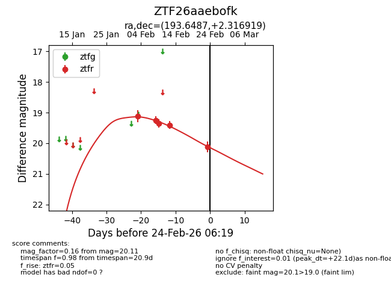
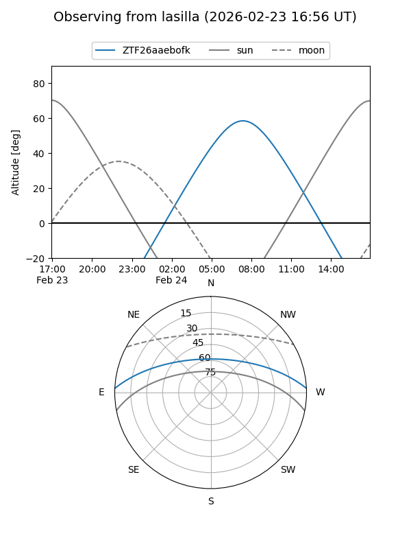
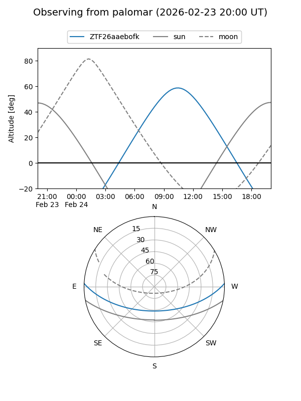

ZTF26aaebofk
Target ZTF26aaebofk at 2026-02-24 09:08
Aliases and brokers:
FINK: link
Lasair: link
ALeRCE: link
alt names
ZTF26aaebofk (ztf,fink_ztf)
Coordinates:
equatorial (ra, dec) = 193.6487,+2.31692
equatorial (HMS+DMS) = 12:54:35.70,+02:19:00.91
galactic (l, b) = (304.8107,+65.17715)
Flags:
Photometry:
last ztfr=20.11
5 ztfr detections
Lightcurve

Visibility


Additional plots